Celkový čas na telefonu
Celkem se dotazníku zúčastnilo
63
studentů a studentek a zjistili jsme, že na telefonu trávíme každý den průměrně
4 h 31 m
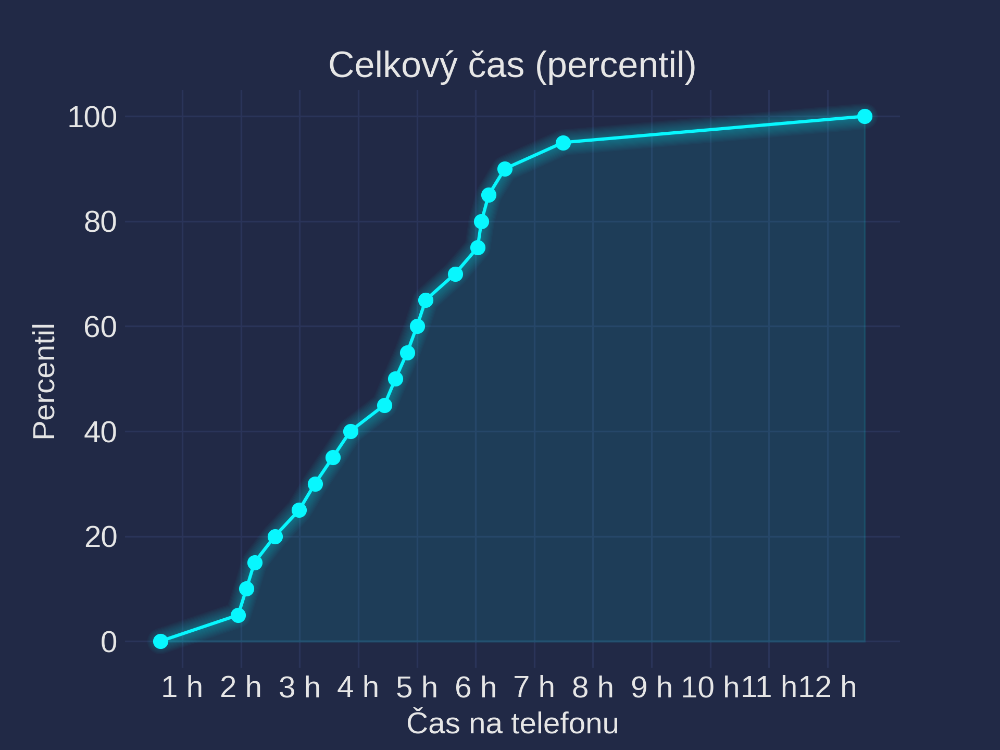
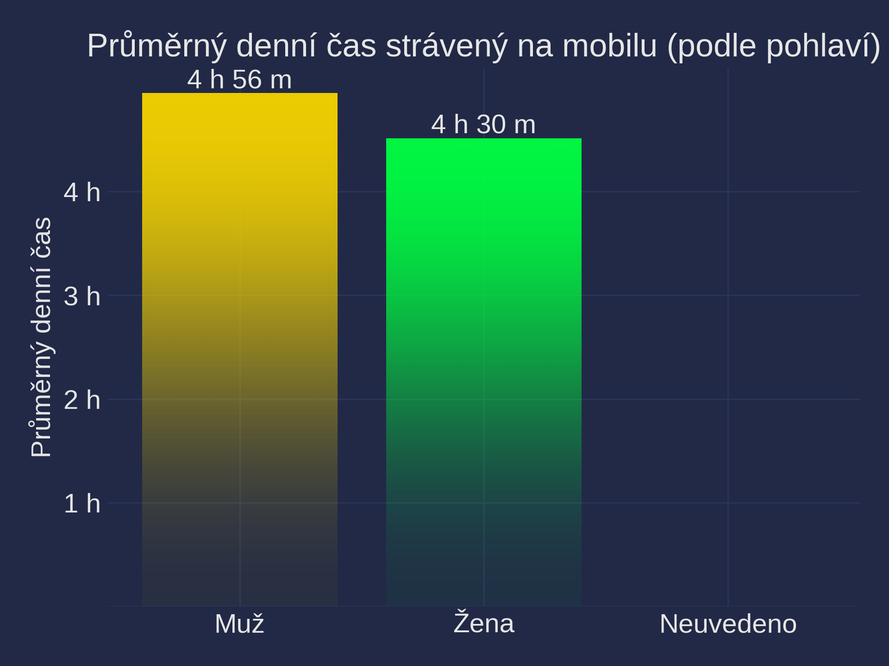
Jak jsou na tom jednotlivé třídy?
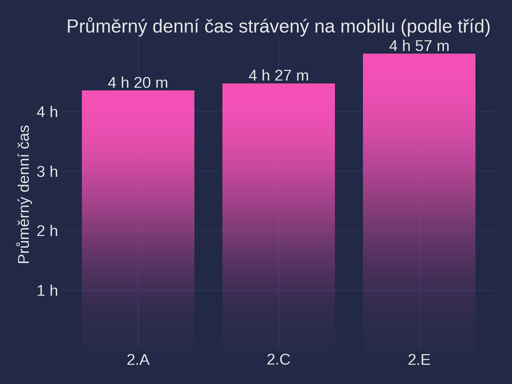
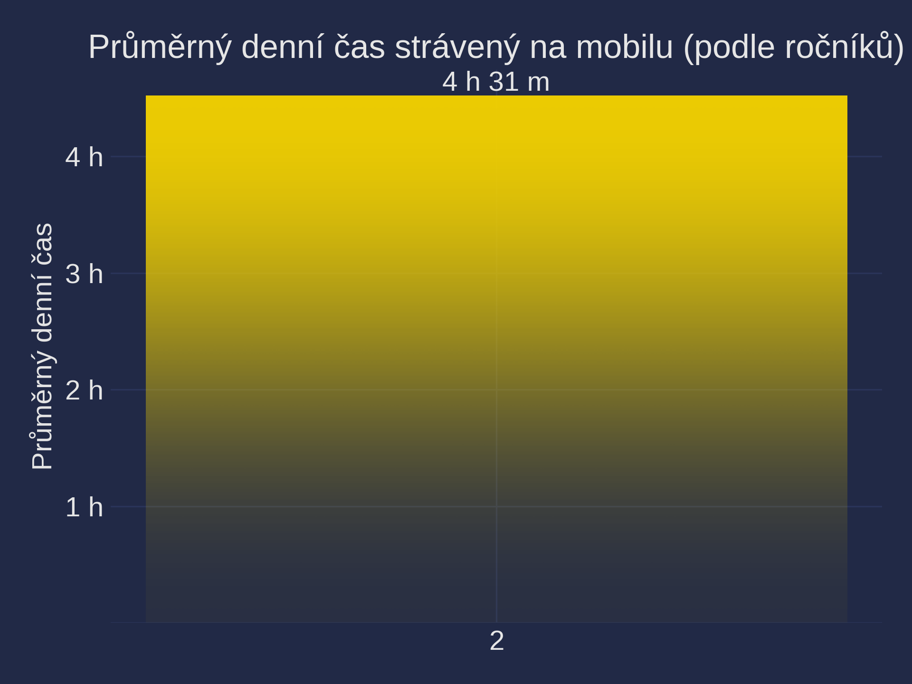
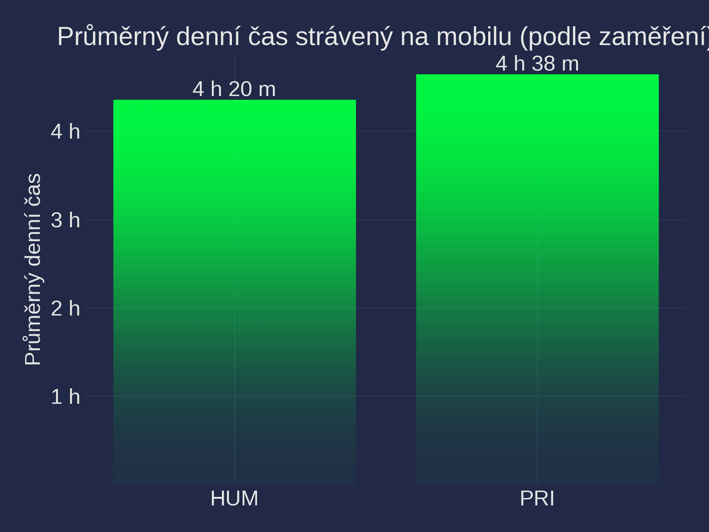
Sebehodnocení času
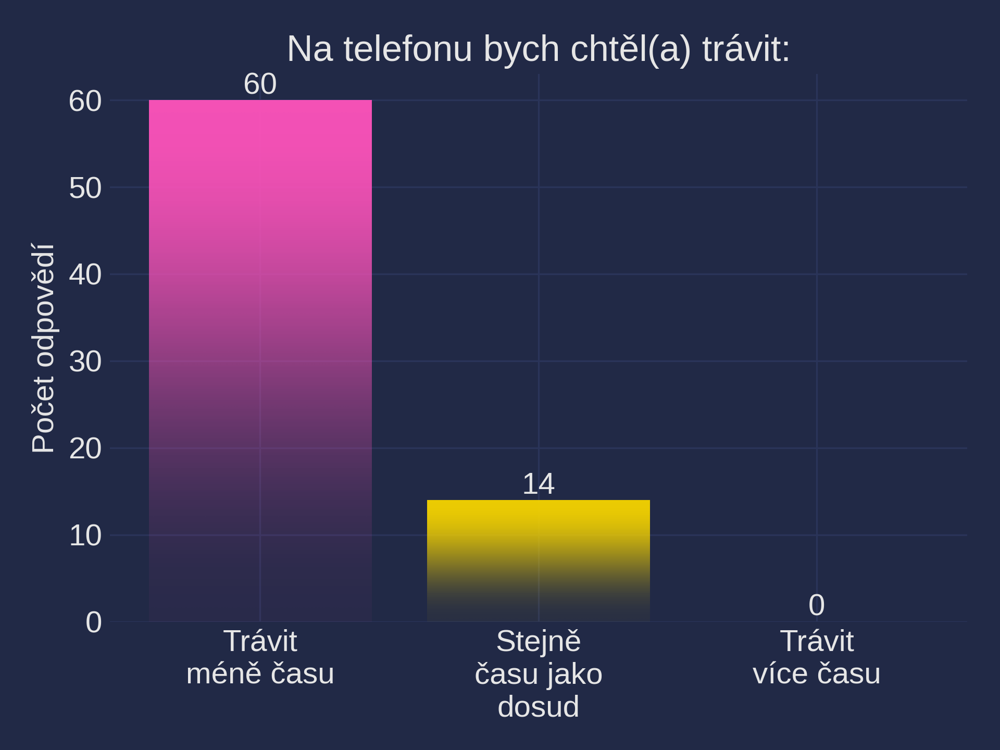
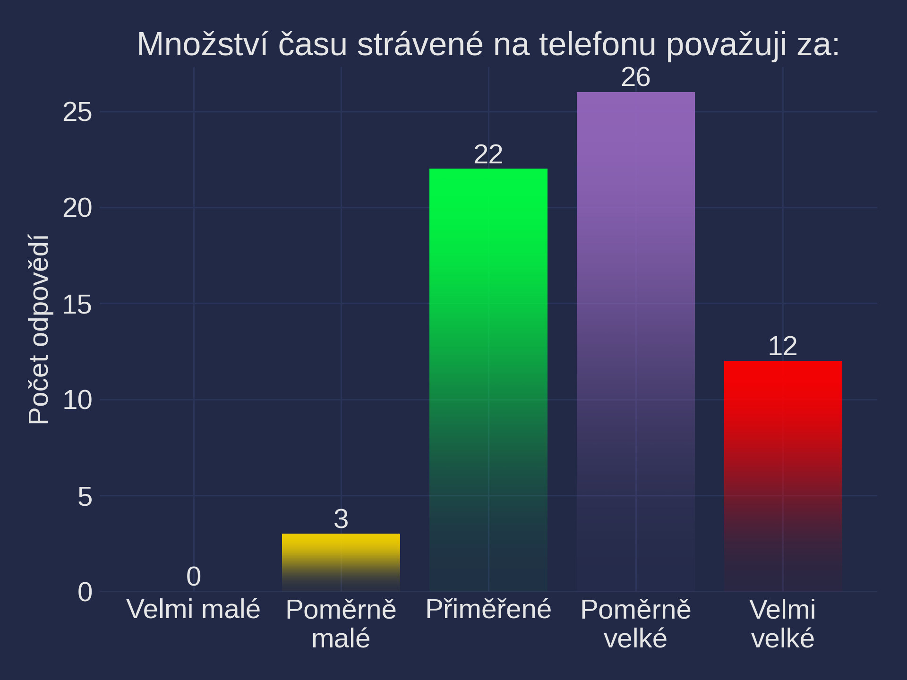
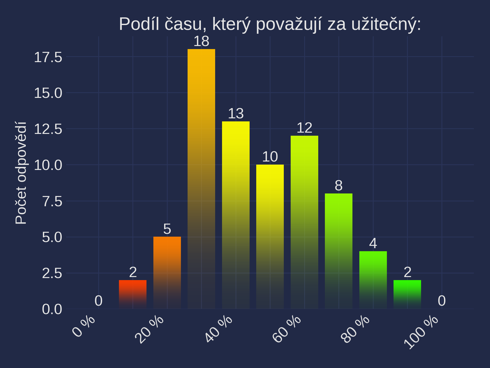
Závislost na mobilním telefonu
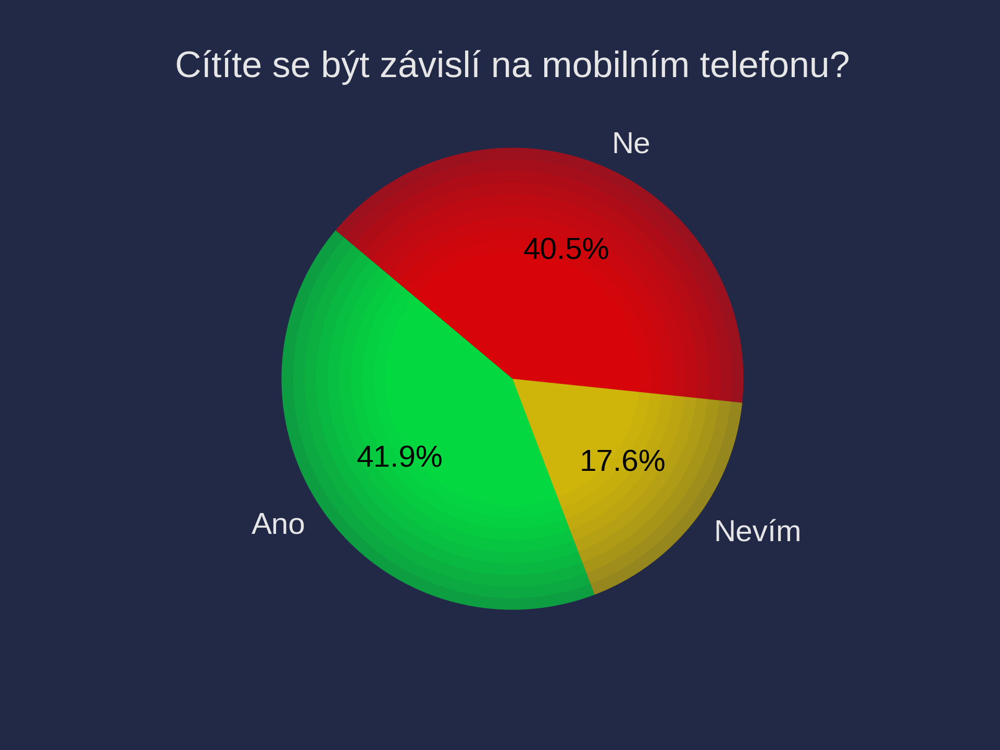
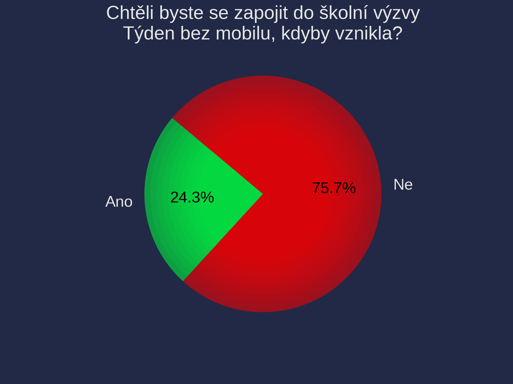
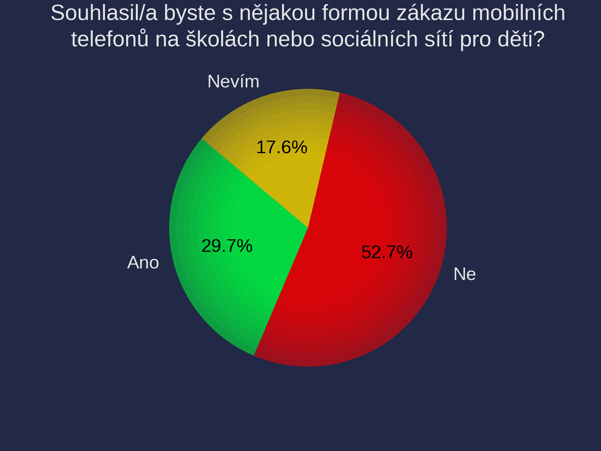
Statistika aplikací
89 %
z Vás (56) má aplikaci Instagram mezi pěti nejpoužívanějšími aplikacemi a tráví s ní každý den průměrně
1 h 38 m


TikTok
41 %
z Vás (26) má aplikaci TikTok mezi pěti nejpoužívanějšími aplikacemi a tráví s ní každý den průměrně
1 h 50 m


YouTube
38 %
z Vás (24) má aplikaci YouTube mezi pěti nejpoužívanějšími aplikacemi a tráví s ní každý den průměrně
1 h 20 m


Webový prohlížeč
44 %
z Vás (28) má aplikaci Webový prohlížeč mezi pěti nejpoužívanějšími aplikacemi a tráví s ní každý den průměrně
49 m


Brawl Stars
13 %
z Vás (8) má aplikaci Brawl Stars mezi pěti nejpoužívanějšími aplikacemi a tráví s ní každý den průměrně
54 m


30 %
z Vás (19) má aplikaci WhatsApp mezi pěti nejpoužívanějšími aplikacemi a tráví s ní každý den průměrně
18 m


Fotky
17 %
z Vás (11) má aplikaci Fotky mezi pěti nejpoužívanějšími aplikacemi a tráví s ní každý den průměrně
27 m


Spotify
21 %
z Vás (13) má aplikaci Spotify mezi pěti nejpoužívanějšími aplikacemi a tráví s ní každý den průměrně
20 m


Vinted
5 %
z Vás (3) má aplikaci Vinted mezi pěti nejpoužívanějšími aplikacemi a tráví s ní každý den průměrně
1 h 28 m


ChatGPT
14 %
z Vás (9) má aplikaci ChatGPT mezi pěti nejpoužívanějšími aplikacemi a tráví s ní každý den průměrně
26 m


Geometry Dash
6 %
z Vás (4) má aplikaci Geometry Dash mezi pěti nejpoužívanějšími aplikacemi a tráví s ní každý den průměrně
58 m